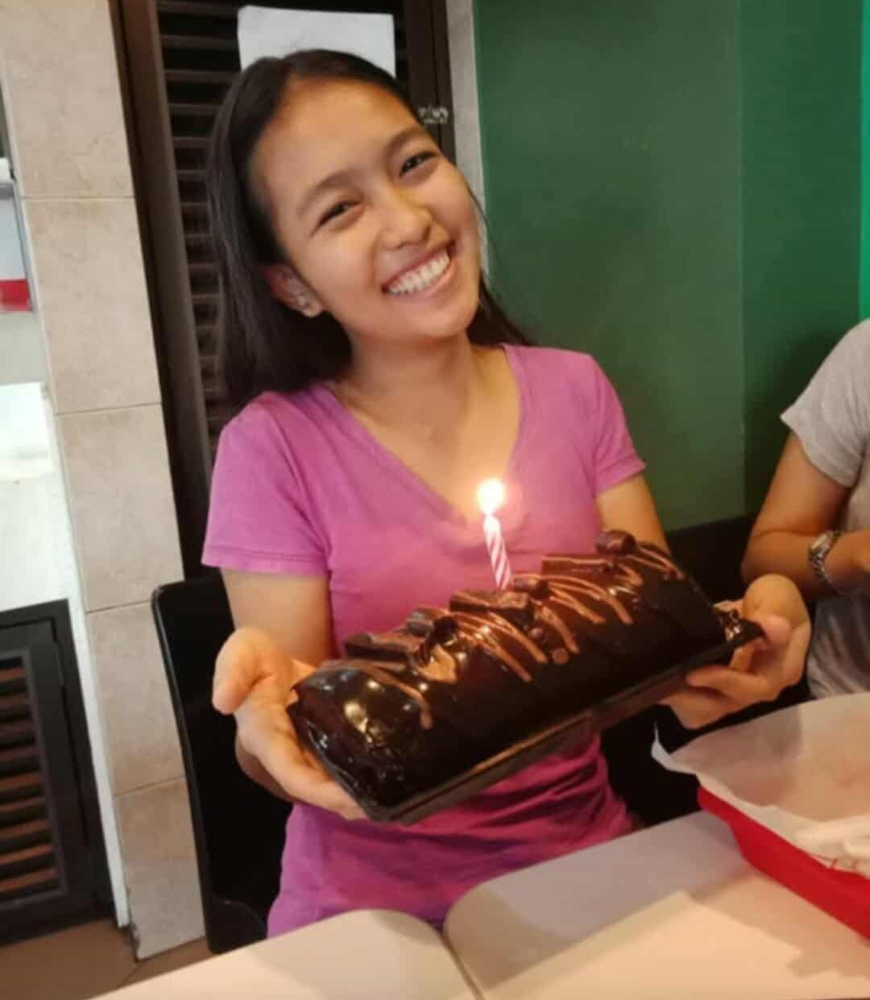
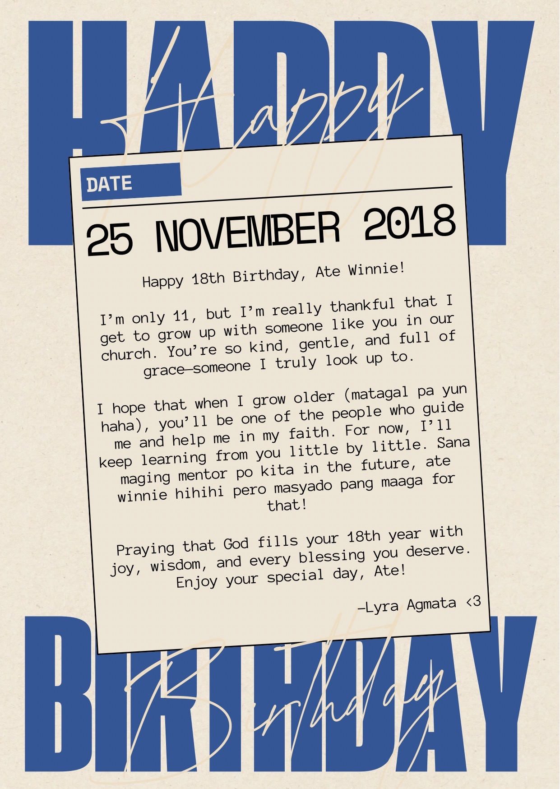
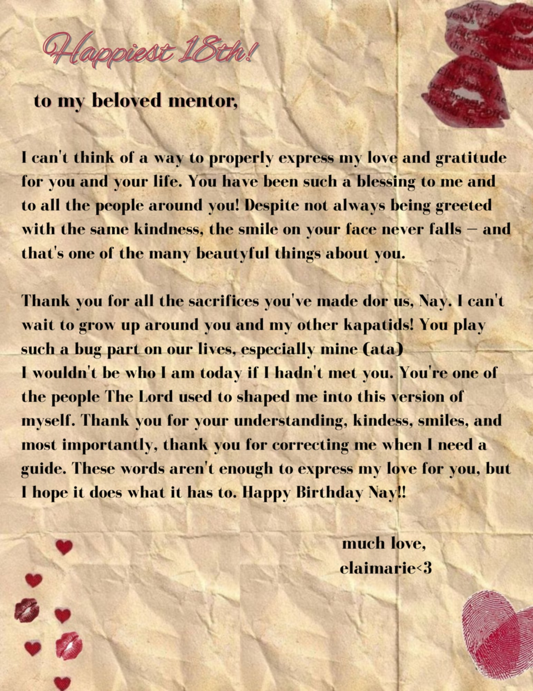
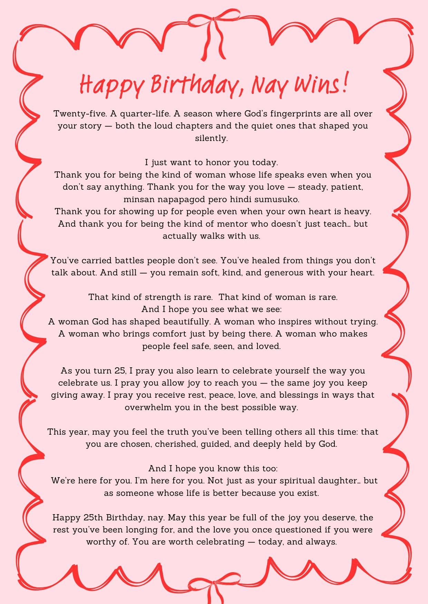
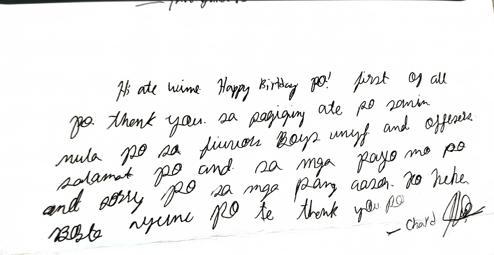
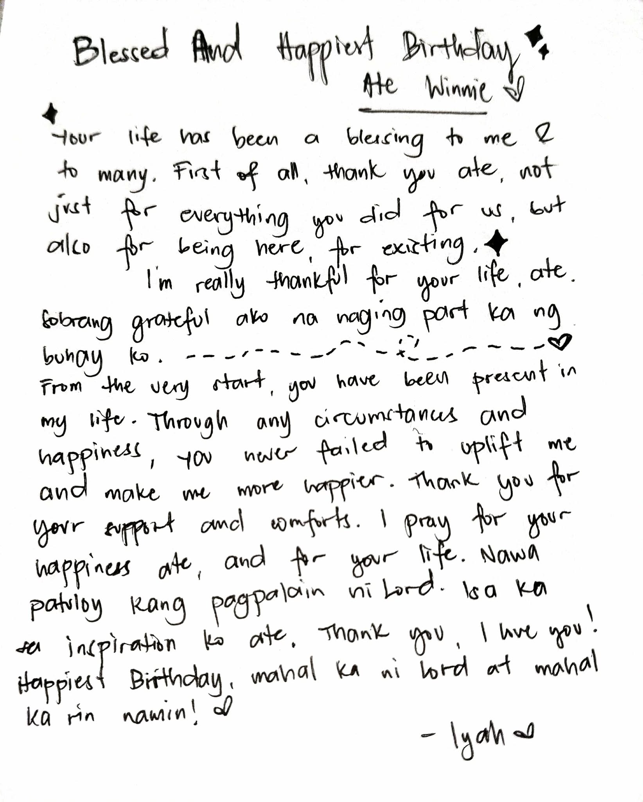
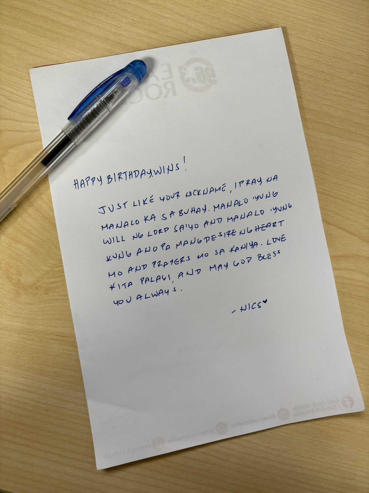
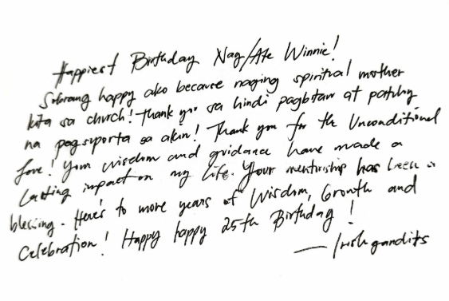

I know we can't go back in time and heal the 18th year old Winnie
who never experienced the tradition debut, but we hope that we can somehow
make up for it a bit with this little scrapbook full of letters and love!
Here's to many more years of friendship, mentorship and unforgettable moments together!
SCROLL DOWN ^^

A beautiful moment captured.

Fun times!

Adventures together.

Core Moments


A beautiful moment captured.

Fun times!

Adventures together.
Dear Ate Win,
Syempre, save the best for last, chzzzzz HAHAHAHAH
Happiest Birthday again Ate Win!! I hope na naging happy sa little celebration namin for you :>
Anywaysss... I want to say thank you for being an ate for me. Matagal ko hinihiling kay Lord na magkaroon ng ate.
And I'm so grateful and blessed na ikaw yung napili nya to be my ate.
Thank you for always being there for me, for guiding me, for listening to my rants, for being my mentor.
I think talagang will ni Lord na ikaw ung ireach out ko nung gabi na un.
Thank you kasi lagi kang nakikinig ng mga kwento at mga ganap ko sa life. I hope na maging ganito pa tayo for many years to come.
Sinong mag aakala na dating nag bibiruan lang sa chat ay ngayon magiging sharing na ng mga life happenings.
and lessons. I am really grateful for your life Ate. Sobrang blessed ako na nagkaroon ako ng Ate Winnie.
I pray that you will continue to be a blessing to others as you have been to me.
I hope na maging inspiration ka pa sa madaming kabataan na tulad ko. The world needs more people like you Ate Win.
Maybe with a bit of love and care na you give us, the world will be a much better place.
I thank God for putting you on my path. Thank you for being a wonderful ate and mentor.
I pray that you will have a fantastic birthday filled with love, joy, and all the things that make you happy.
May this year bring you success, good health, and many more blessings.
I pray that our bond will continue to grow stronger with each passing year.
I pray that we will continue to share our joys and sorrows, our triumphs and challenges.
I pray that we will always fight the battles with God, no matter what life throws our way.
Once again, Happy Birthday Ate Win! Hope you enjoyed this day! labyuuuu Ate Winnie!!!
Love the one and only,
Batang makulit :D (Steph <3)